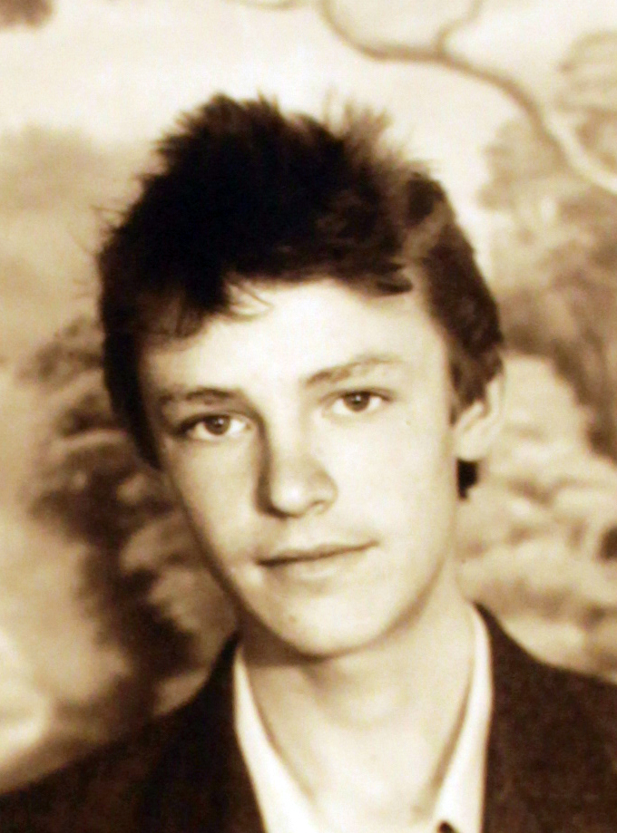

Возраст: 46
Отец: Васильев Юрий Алексеевич (19.05.1944 - 12.10.2010)
Мать: Васильева (Саулевич) Надежда Васильевна (24.04.1947)
Сестра: Малышкина (Васильева) Светлана Юрьевна (05.02.1969)
Жена: Васильева Людмила Владимировна (01.01.1983)
Дочь: (Васильева) Алена Романовна (2003)
Дочь: (Васильева) Анастасия Романовна (2009)
Родился: 30.06.1975. Отец: Васильев Юрий Алексеевич. Мать: Васильева (Саулевич) Надежда Васильевна.
Женился. Жена: Васильева Людмила Владимировна.
Родилась дочь: (Васильева) Алена Романовна, 2003. Мать: Васильева Людмила Владимировна.
Родилась дочь: (Васильева) Анастасия Романовна, 2009. Мать: Васильева Людмила Владимировна.
. |